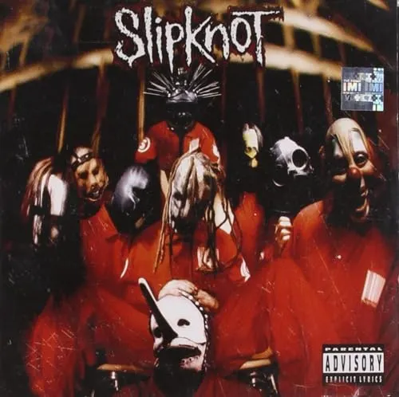

Slipknot: a Banda mais
insana do
mundo

Slipknot é uma banda estadunidense, criada em Des moine, Iowa. A banda possui um estilo único(até para o metal)
com suas máscaras e atitude estravazante no palco
Integrantes originais:
Corey Taylor (Cantor principal) N° 8
Mick Thomson (Guitarrista) N° 7
Shawn "palhaço" Crahan (Percussão) N° 6
Craig Jones (Sample e Teclado) N° 5
Jim Root (Guitarrista) N° 4
Chris Fehn (Percussão e backing vocals) N° 3
Paul Grey (Baixista) N° 2
Joey Jordison (Baterista) N° 1
Sid Wilson (DJ) N° 0
Seus Albuns consistem em:
Slipknot
Iowa
Vol.3:The Subliminal Verses
All hope is gone
.5: The Gray Chapter
We Are Not Your Kind
The End, So Far